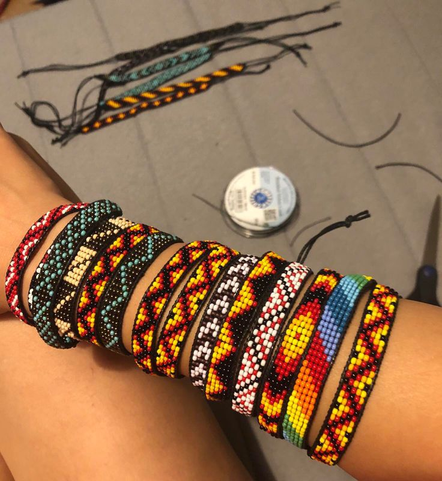

Nuestros Productos

Manillas
Manillas tejidas en mostacilla con la técnica arhuaca Kankuama, representando saberes ancestrales que los hijos del fuego compartimos con el mundo.
Precio: Desde $25.000 COP
Añadir al carrito
Collares
Collares en crochet y mostacilla tejidos por manos artesanas de la Sierra Nevada de Santa Marta. Cada pieza es única y lleva consigo la energía de nuestras montañas.
Precio: Desde $50.000 COP
Añadir al carritoManilla Palestina
Pulsera en mostacilla con la bandera Palestina. Somos la voz de quienes no tienen voz, levanta el puño por la libertad del pueblo Palestino con nuestra pulsera tejida.
Precio: $30.000 COP
Añadir al carrito